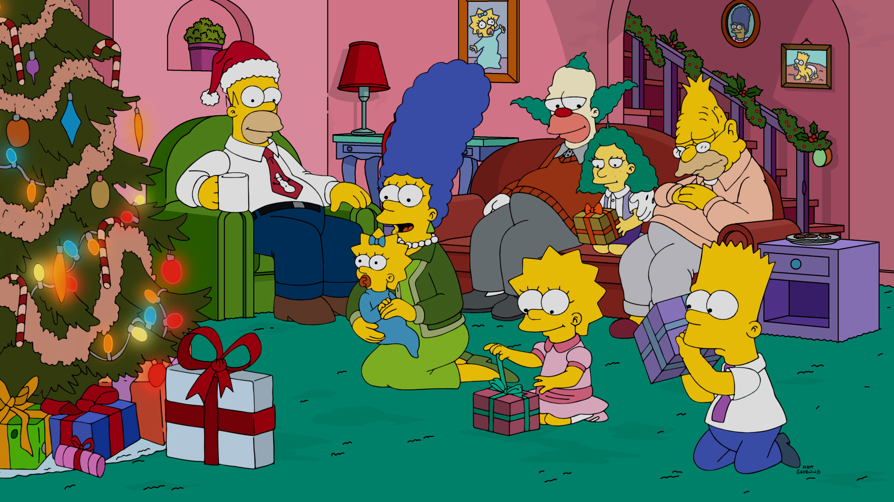

Ficciones Futuras
Ficciones Futuras es una materia que se planta en el presente, precisamente en la arquitectura y el diseño contemporáneo.
Actualmente vivimos en un mundo muy influenciado por la tecnología y sus dispositivos. Lo digital nos ha tomado por completo, no solo nos relacionamos con humanos, sino también con no-humanos —robots, algoritmos, o cualquier dispositivo conectado a internet— que nos ayudan en nuestras tareas cotidianas.
Cómo reaccionan la arquitectura y el diseño frente a este contexto constituye uno de los principales objetivos de la materia. Problemáticas contemporáneas como el género, la sustentabilidad, las migraciones masivas, los nuevos espacios de socialización, la obsolescencia programada o la inteligencia artificial, entre otras, forman parte de la agenda cuatrimestral.
En términos metodológicos, cada grupo deberá seleccionar una de las temáticas propuestas por el equipo docente (en adelante agentes disruptores) y desarrollar una investigación intensiva que funcione como punto de partida y marco conceptual para la construcción del sentido del trabajo a lo largo de la cursada.
A su vez, y en carácter disruptivo, los estudiantes deberán elegir una obra contemporánea dentro de una selección de casos de estudio. El cruce entre obra y agente disruptor permitirá llevar adelante un análisis profundo y elaborar una lectura crítica que promueva un pensamiento genuino e intensivo.
En este sentido, nos interesa particularmente indagar en las propiedades intrínsecas de la arquitectura y el diseño, y comprender cómo estas se manifiestan y se reconfiguran frente a las condiciones emergentes.
El estudio y análisis tanto de la historia de la arquitectura como del diseño resultan fundamentales para alcanzar estos objetivos. Se busca que los estudiantes puedan identificar problemáticas y desafíos contemporáneos, y a partir de ellos formular conceptos que orienten el desarrollo de sus propuestas.
Creemos que Ficciones Futuras es una materia necesaria para el plan actual, ya que no hay materias que trabajen sobre la contemporaneidad de forma crítica.
Además, deseamos que los estudiantes salgan de la universidad con una posición planteada sobre los condicionantes externos a los que se van a encontrar, y con los cuales van a tener que enfrentarse, no sólo como profesionales, sino esencialmente como personas.
El plantel docente, altamente preparado, cuenta con una extensa trayectoria trabajando los temas planteados. El fruto de estas investigaciones se lo puede apreciar a través de charlas, conferencias, y workshops que brindan no sólo a nivel nacional sino también internacionalmente.
Arq. Francisco Hesayne
Arq. Santiago Albarracín
Arq. Augusto Volpe
Arq. Agustina Pía López
Arq. Candela Groznik
Arq. Edson Luis Tamayo Portillo
Mg. Arq. Carolina Corti
Constanza Tkaczyk — Estudiante DG
Santiago Ramírez Tricoli — Estudiante DIyS
Arq. Agustina Giambelluca — Bahía Blanca
Arq. Agustín Poch — Australia
Arq. Mariano Valle — España
Arq. Jennifer Kazár — España
Arq. Luciano Enriquez
Arq. Camila Mijoevich
CONSIGNA 2026 - 2DO SEMESTRE
Ficciones Domésticas - La nueva generación / el semillero

Foto: Casa de Los Simpsons - Los Simpsons t28 e10
Este cuatrimestre vamos a trabajar sobre casas contemporáneas...